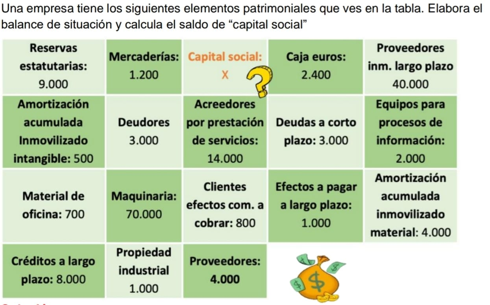
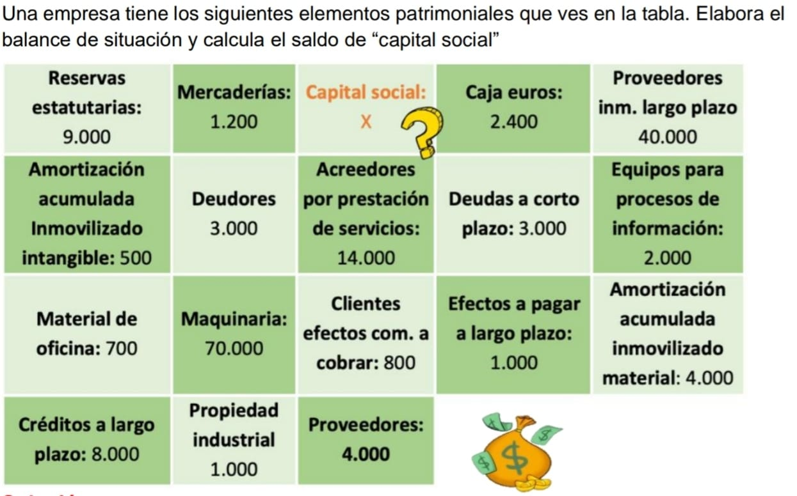

PF. Balance de situación
Elabora el balance de situación de la siguiente empresa en una hoja de cálculo de manera que puedas calcular el saldo de la incógnita.
Debes seguir la estructura del PGC y subir la tarea a Classroom.

Elabora el balance de situación de la siguiente empresa en una hoja de cálculo de manera que puedas calcular el saldo de la incógnita.
Debes seguir la estructura del PGC y subir la tarea a Classroom.

Este material es una adaptación del recurso original "Empresa e Iniciativa Emprendedora: Desafío 8" del Proyecto EDIA de Cedec.
Autoras: Maria Cruz García Sanchis y Daniela Gimeno Ruiz.
Co-autora: María Isabel Sánchez Sánchez
Obra publicada con Licencia Creative Commons Reconocimiento Compartir igual 4.0